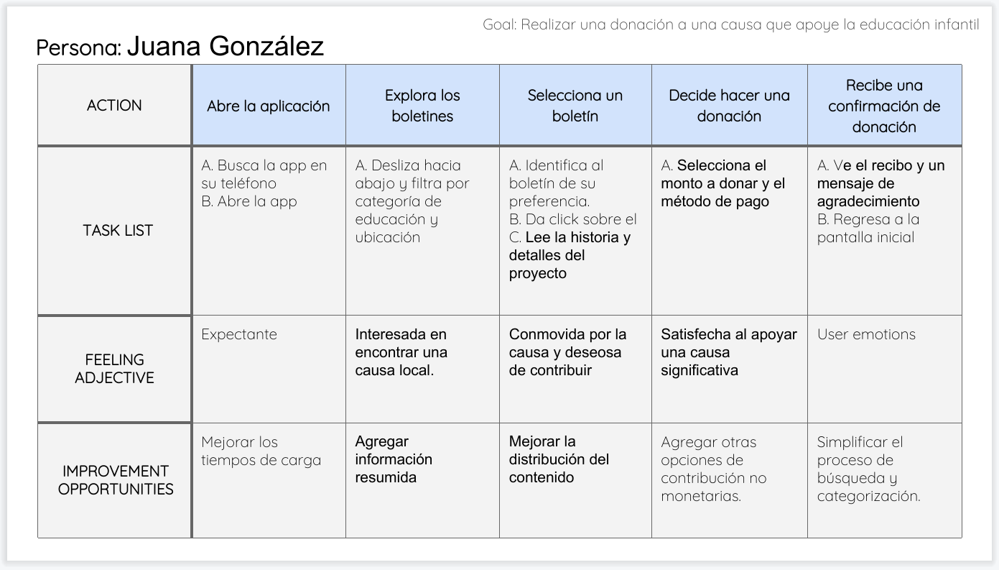
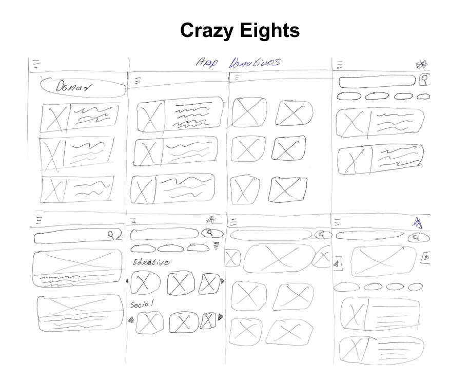
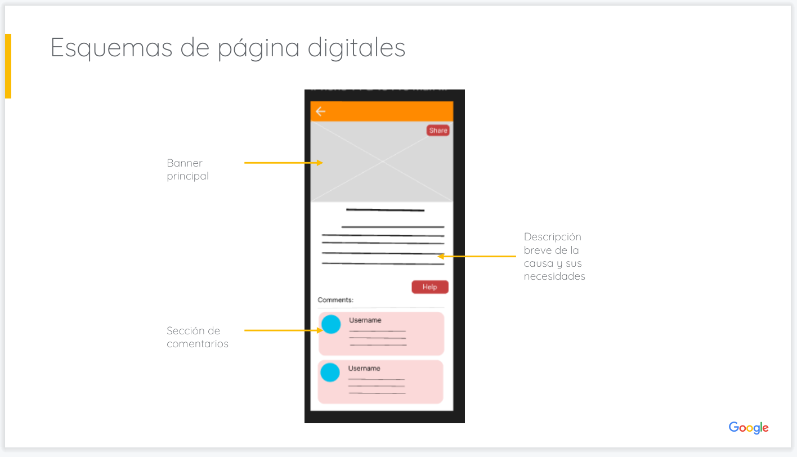
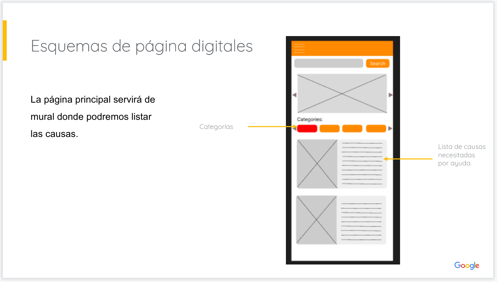
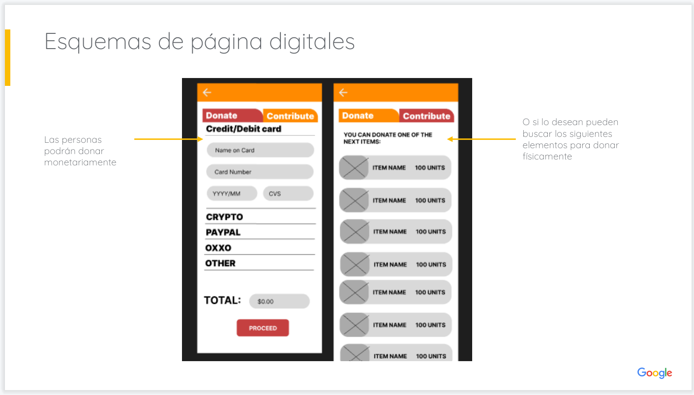
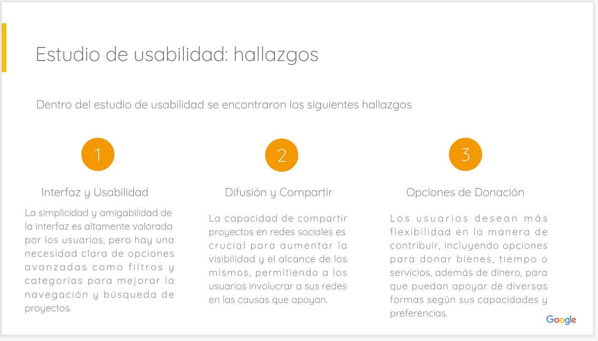

DONATE.COM

Detalles del Proyecto
DONATE.COM es un proyecto realizado como parte del 7 curso de diseño Diseño de UX - Google 2024. Tiene como proposito diseñar una aplicación móvil para captación de donativos y difusión solicitudes de ayuda por parte de organismos de beneficiencia.
- Investigación de usuarios
- Creación de esquemas
- Creación de prototipos
- Etcétera.
Desafios: Se predente desarrollar una aplicación móvil que permite concentrar los pedidos de ayuda de las diferentes organizaciones beneficas de la ciudad en orden de servir como medio de difusión.
Soluciones: DONATE.COM es una aplicación que permite a las organizaciones benéficas de la ciudad publicar sus solicitudes de ayuda y a los usuarios donar a la causa que más les interese.
Conociendo al Usuario:
Para realizar el presente proyecto se realizó un estudio de usabilidad y se desarrollo ciertos elementos de apoyo como personas y mapas de recorrido.
Metodología
Tipo de estudio: Estudio de usabilidad sin moderación
Ubicación: Matamoros Tamp, de forma remota (los participantes realizarán la prueba desde sus casas)
Participantes: 5 Participantes
Día: 1 - 10 julio
Duración: 25 - 30 minutos
Público Objetivo: Personas entre los 18 a 45 años
Personas:
Recorrido del Usuario:

Comenzar el diseño
Esquemas de página en papel:

Esquemas de páginas digitales:



Maquetas:
Hallazgos y casos de mejora:
